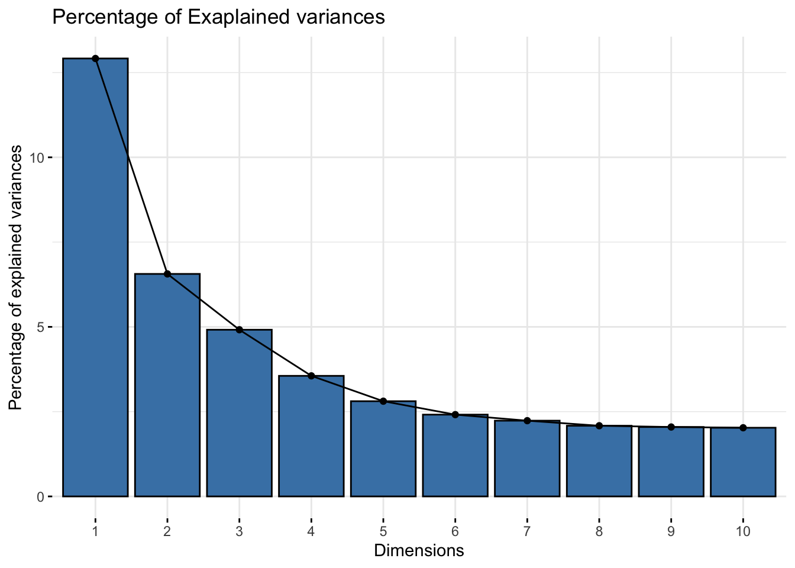

Machine Learning Projet
Emanuel Michele Soda
6/6/2021
Last updated: 2021-06-07
Checks: 7 0
Knit directory: ML_R/
This reproducible R Markdown analysis was created with workflowr (version 1.6.2). The Checks tab describes the reproducibility checks that were applied when the results were created. The Past versions tab lists the development history.
Great! Since the R Markdown file has been committed to the Git repository, you know the exact version of the code that produced these results.
Great job! The global environment was empty. Objects defined in the global environment can affect the analysis in your R Markdown file in unknown ways. For reproduciblity it’s best to always run the code in an empty environment.
The command set.seed(20210606) was run prior to running the code in the R Markdown file. Setting a seed ensures that any results that rely on randomness, e.g. subsampling or permutations, are reproducible.
Great job! Recording the operating system, R version, and package versions is critical for reproducibility.
Nice! There were no cached chunks for this analysis, so you can be confident that you successfully produced the results during this run.
Great job! Using relative paths to the files within your workflowr project makes it easier to run your code on other machines.
Great! You are using Git for version control. Tracking code development and connecting the code version to the results is critical for reproducibility.
The results in this page were generated with repository version 1c32170. See the Past versions tab to see a history of the changes made to the R Markdown and HTML files.
Note that you need to be careful to ensure that all relevant files for the analysis have been committed to Git prior to generating the results (you can use wflow_publish or wflow_git_commit). workflowr only checks the R Markdown file, but you know if there are other scripts or data files that it depends on. Below is the status of the Git repository when the results were generated:
Ignored files:
Ignored: .DS_Store
Ignored: .Rhistory
Ignored: .Rproj.user/
Note that any generated files, e.g. HTML, png, CSS, etc., are not included in this status report because it is ok for generated content to have uncommitted changes.
These are the previous versions of the repository in which changes were made to the R Markdown (analysis/Analysis.Rmd) and HTML (docs/Analysis.html) files. If you’ve configured a remote Git repository (see ?wflow_git_remote), click on the hyperlinks in the table below to view the files as they were in that past version.
| File | Version | Author | Date | Message |
|---|---|---|---|---|
| Rmd | 1c32170 | Emanuel Michele Soda | 2021-06-07 | wflow_publish(all = T) |
| html | 509db74 | Emanuel Michele Soda | 2021-06-07 | Build site. |
| Rmd | 27ced9e | Emanuel Michele Soda | 2021-06-07 | wflow_publish(all = T) |
| html | a083814 | Emanuel Michele Soda | 2021-06-07 | Build site. |
| Rmd | 212ed1e | Emanuel Michele Soda | 2021-06-07 | wflow_git_commit(files = c("analysis/Analysis.Rmd", "code/plot_Scatterplot.R", |
Read Data
train <- read_csv(file = "data/train.csv", col_types = cols(.default = col_double(),
class = col_factor()))
row.names(train) <- paste("Sample", 1:dim(train)[1], sep = "_")Warning: Setting row names on a tibble is deprecated.class_name <- train$classDataset description
train %>% group_by(class) %>% summarise(numberOfSample = n()) %>%
ggplot(data=., aes(x=class, y=numberOfSample, fill= class)) +
geom_bar(stat="identity") +
ggtitle("Number of sample for each class") +
geom_text(aes(label=numberOfSample), position = position_stack(vjust=0.5), size=10) +
scale_fill_brewer(palette="Set3") +
theme_minimal()
| Version | Author | Date |
|---|---|---|
| a083814 | Emanuel Michele Soda | 2021-06-07 |
train %>% mutate(type = if_else(str_detect(class, regex(pattern = "t-")),
true = "Trisomic",
false = "Control")) %>%
group_by(type) %>% summarise(numberOfSample = n()) %>%
ggplot(data=., aes(x=type, y=numberOfSample, fill=type)) +
geom_bar(stat="identity") +
ggtitle("Number of sample for each Genotype") +
geom_text(aes(label=numberOfSample), position = position_stack(vjust=0.5), size=10) +
scale_fill_manual(values=c("#999999", "#E69F00")) +
theme_minimal()
| Version | Author | Date |
|---|---|---|
| a083814 | Emanuel Michele Soda | 2021-06-07 |
ggcorr(train, hjust = 0.75, size = 2, color = "grey50")Warning in ggcorr(train, hjust = 0.75, size = 2, color = "grey50"): data in
column(s) 'class' are not numeric and were ignored
| Version | Author | Date |
|---|---|---|
| a083814 | Emanuel Michele Soda | 2021-06-07 |
PCA plots

| Version | Author | Date |
|---|---|---|
| a083814 | Emanuel Michele Soda | 2021-06-07 |

| Version | Author | Date |
|---|---|---|
| a083814 | Emanuel Michele Soda | 2021-06-07 |
Fetature Selection
Recursive feature selection
Outer resampling method: Cross-Validated (10 fold)
Resampling performance over subset size:
Variables Accuracy Kappa AccuracySD KappaSD Selected
1 0.3459 0.2469 0.08499 0.09999
2 0.6370 0.5820 0.06595 0.07497
3 0.8062 0.7764 0.08239 0.09522
4 0.8827 0.8647 0.05767 0.06653
5 0.9016 0.8865 0.06188 0.07131
6 0.9261 0.9146 0.04926 0.05685
7 0.9290 0.9180 0.03749 0.04336
8 0.9286 0.9176 0.04402 0.05086
9 0.9449 0.9365 0.03534 0.04078
10 0.9453 0.9369 0.02971 0.03434
11 0.9589 0.9526 0.03299 0.03807
12 0.9590 0.9527 0.02695 0.03107
13 0.9536 0.9466 0.03162 0.03641
14 0.9509 0.9434 0.03080 0.03543
15 0.9536 0.9466 0.03397 0.03911
16 0.9615 0.9557 0.03243 0.03733 *
17 0.9615 0.9557 0.02727 0.03137
18 0.9562 0.9495 0.02687 0.03096
19 0.9534 0.9463 0.02982 0.03430
20 0.9478 0.9398 0.02828 0.03252
76 0.8914 0.8743 0.04482 0.05197
The top 5 variables (out of 16):
SOD1_N, pPKCG_N, pERK_N, Tau_N, BRAF_N
| Version | Author | Date |
|---|---|---|
| a083814 | Emanuel Michele Soda | 2021-06-07 |
[1] "SOD1_N" "pPKCG_N" "pERK_N" "Tau_N" "BRAF_N" "DYRK1A_N"
[7] "pCAMKII_N" "pPKCAB_N" "DSCR1_N" "MTOR_N" "AMPKA_N" "NUMB_N"
[13] "CaNA_N" "BAX_N" "ADARB1_N" "NR1_N" 
| Version | Author | Date |
|---|---|---|
| 509db74 | Emanuel Michele Soda | 2021-06-07 |
`stat_bin()` using `bins = 30`. Pick better value with `binwidth`.
`stat_bin()` using `bins = 30`. Pick better value with `binwidth`.
`stat_bin()` using `bins = 30`. Pick better value with `binwidth`.
| Version | Author | Date |
|---|---|---|
| 509db74 | Emanuel Michele Soda | 2021-06-07 |
sessionInfo()R version 4.0.3 (2020-10-10)
Platform: x86_64-apple-darwin17.0 (64-bit)
Running under: macOS Big Sur 10.16
Matrix products: default
BLAS: /Library/Frameworks/R.framework/Versions/4.0/Resources/lib/libRblas.dylib
LAPACK: /Library/Frameworks/R.framework/Versions/4.0/Resources/lib/libRlapack.dylib
locale:
[1] it_IT.UTF-8/it_IT.UTF-8/it_IT.UTF-8/C/it_IT.UTF-8/it_IT.UTF-8
attached base packages:
[1] stats graphics grDevices utils datasets methods base
other attached packages:
[1] M3C_1.12.0 mlbench_2.1-3 caret_6.0-86 lattice_0.20-41
[5] gridExtra_2.3 plotly_4.9.3 factoextra_1.0.7 GGally_2.1.1
[9] pheatmap_1.0.12 forcats_0.5.1 stringr_1.4.0 dplyr_1.0.5
[13] purrr_0.3.4 readr_1.4.0 tidyr_1.1.3 tibble_3.1.1
[17] ggplot2_3.3.3 tidyverse_1.3.1 workflowr_1.6.2
loaded via a namespace (and not attached):
[1] readxl_1.3.1 snow_0.4-3 backports_1.2.1
[4] plyr_1.8.6 lazyeval_0.2.2 splines_4.0.3
[7] crosstalk_1.1.1 digest_0.6.27 foreach_1.5.1
[10] htmltools_0.5.1.1 matrixcalc_1.0-4 fansi_0.4.2
[13] magrittr_2.0.1 cluster_2.1.2 doParallel_1.0.16
[16] openxlsx_4.2.3 recipes_0.1.16 modelr_0.1.8
[19] gower_0.2.2 askpass_1.1 colorspace_2.0-0
[22] rvest_1.0.0 ggrepel_0.9.1 haven_2.4.1
[25] xfun_0.22 crayon_1.4.1 jsonlite_1.7.2
[28] survival_3.2-11 iterators_1.0.13 glue_1.4.2
[31] gtable_0.3.0 ipred_0.9-11 car_3.0-10
[34] abind_1.4-5 scales_1.1.1 DBI_1.1.1
[37] rstatix_0.7.0 Rcpp_1.0.6 viridisLite_0.4.0
[40] reticulate_1.19 proxy_0.4-25 foreign_0.8-81
[43] stats4_4.0.3 lava_1.6.9 umap_0.2.7.0
[46] prodlim_2019.11.13 htmlwidgets_1.5.3 httr_1.4.2
[49] RColorBrewer_1.1-2 ellipsis_0.3.1 pkgconfig_2.0.3
[52] reshape_0.8.8 farver_2.1.0 nnet_7.3-15
[55] sass_0.3.1 dbplyr_2.1.1 utf8_1.2.1
[58] tidyselect_1.1.0 labeling_0.4.2 rlang_0.4.10
[61] reshape2_1.4.4 later_1.2.0 munsell_0.5.0
[64] cellranger_1.1.0 tools_4.0.3 cli_2.5.0
[67] generics_0.1.0 broom_0.7.6 evaluate_0.14
[70] yaml_2.2.1 ModelMetrics_1.2.2.2 knitr_1.33
[73] fs_1.5.0 zip_2.1.1 randomForest_4.6-14
[76] nlme_3.1-152 whisker_0.4 xml2_1.3.2
[79] compiler_4.0.3 rstudioapi_0.13 curl_4.3
[82] e1071_1.7-6 ggsignif_0.6.1 reprex_2.0.0
[85] bslib_0.2.4 stringi_1.5.3 highr_0.9
[88] RSpectra_0.16-0 Matrix_1.3-2 vctrs_0.3.7
[91] pillar_1.6.0 lifecycle_1.0.0 jquerylib_0.1.4
[94] data.table_1.14.0 corpcor_1.6.9 httpuv_1.6.0
[97] R6_2.5.0 promises_1.2.0.1 rio_0.5.26
[100] codetools_0.2-18 MASS_7.3-53.1 assertthat_0.2.1
[103] openssl_1.4.3 rprojroot_2.0.2 withr_2.4.2
[106] parallel_4.0.3 doSNOW_1.0.19 hms_1.0.0
[109] grid_4.0.3 rpart_4.1-15 timeDate_3043.102
[112] class_7.3-18 rmarkdown_2.7 carData_3.0-4
[115] Rtsne_0.15 git2r_0.28.0 ggpubr_0.4.0
[118] pROC_1.17.0.1 lubridate_1.7.10